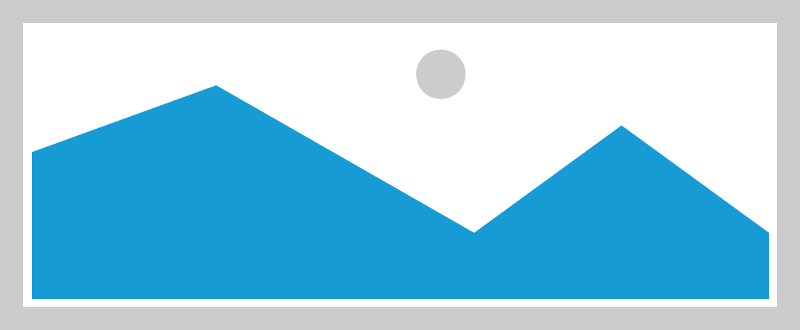

详情
世界第二大沙漠里的古村落，住着神秘族群，被探险家称为世外桃源
2017-12-28 21:55 美文
印象中能被成为“世外桃源”的古村落，大多隐藏在青山绿水之间，有着古朴的村道，有着古老的建筑，生活着与世无争的人们。然而这一处大漠深处的桃花源，却是建在地广人稀的大漠深处，是中国最难到达的古村落，在一个多世纪以前，世人对它还一无所知，它就是达里雅布依！

印象中能被成为“世外桃源”的古村落，大多隐藏在青山绿水之间，有着古朴的村道，有着古老的建筑，生活着与世无争的人们。然而这一处大漠深处的桃花源，却是建在地广人稀的大漠深处，是中国最难到达的古村落，在一个多世纪以前，世人对它还一无所知，它就是达里雅布依！